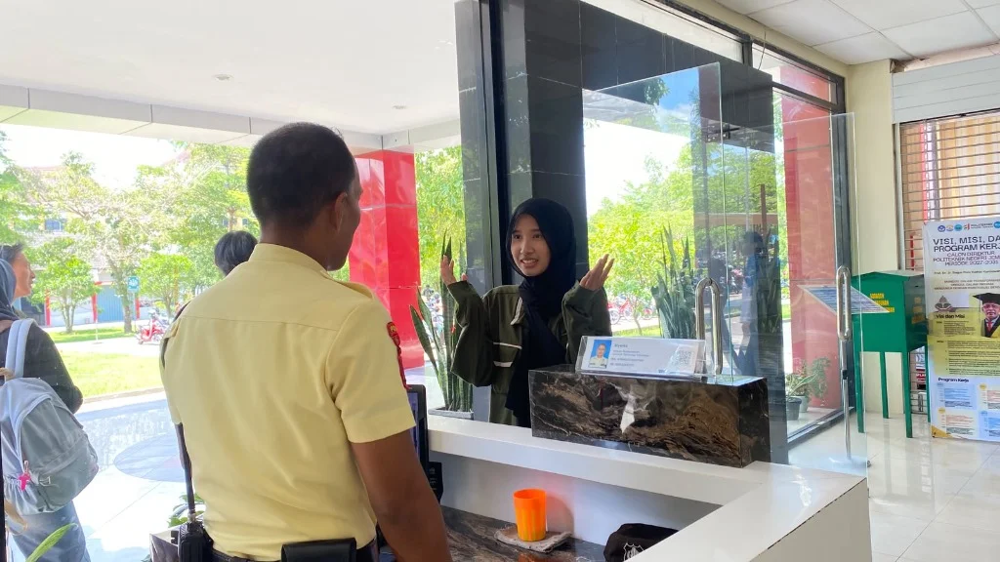
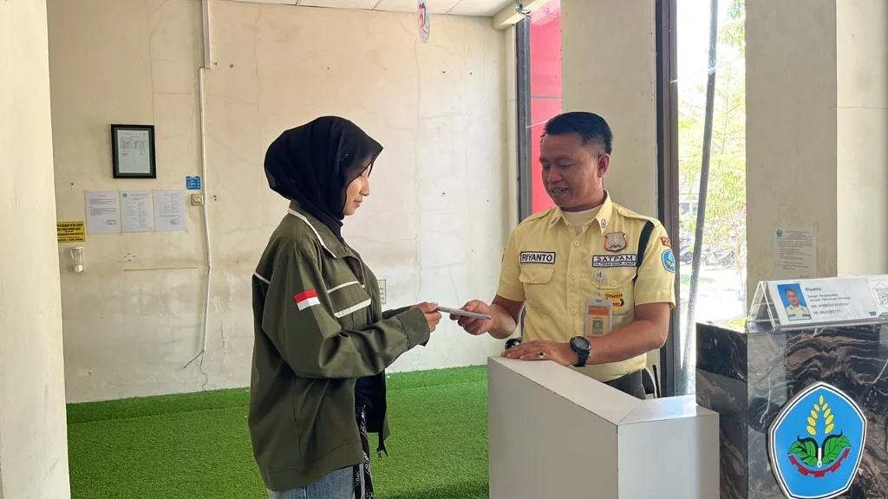
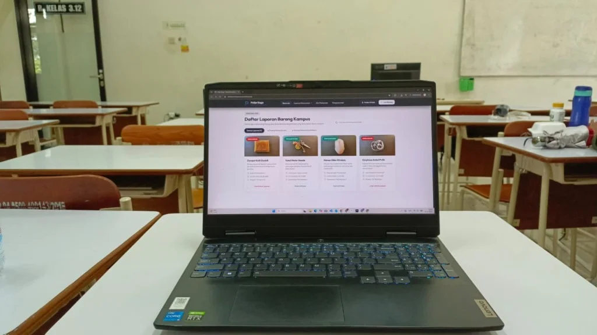
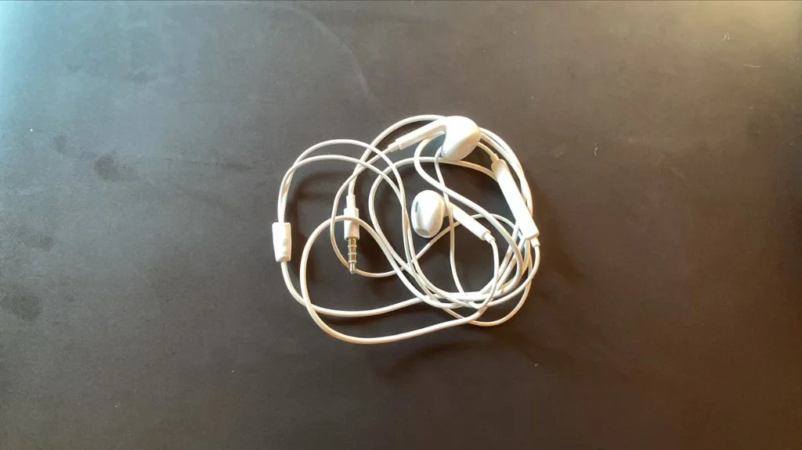
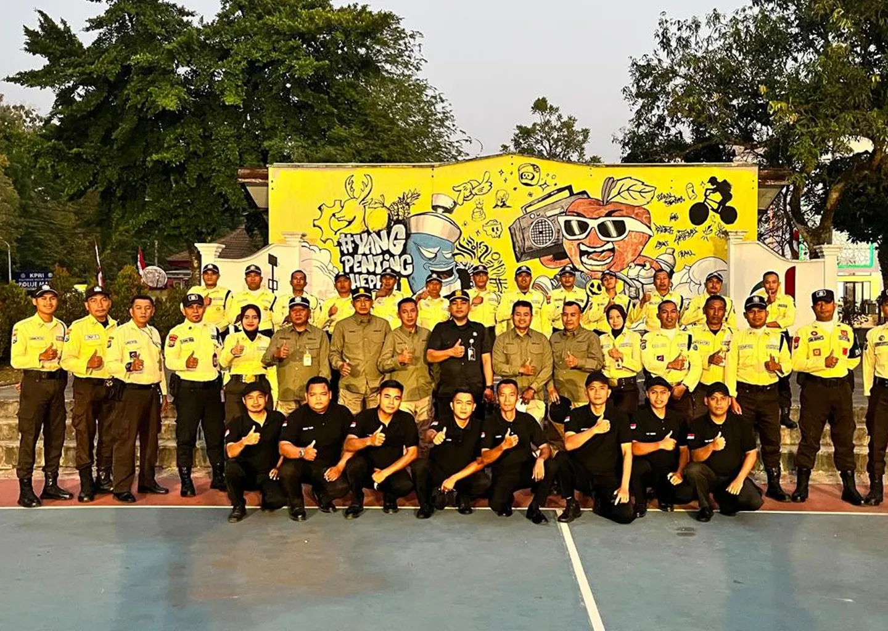

Keamanan Terpadu,
untuk Kampus Polije
Siaga, Transparan, dan Responsif — Menjaga ketertiban lingkungan kampus, pelayanan laporan barang hilang, dan pengamanan barang temuan Politeknik Negeri Jember.
Layanan Keamanan Kampus
Pusat fasilitas terpadu penanganan barang hilang, temuan, dan bantuan keamanan kampus Polije.
Lapor Barang Temuan
Pencatatan dan pengamanan barang yang tertinggal di area kampus agar segera dikembalikan ke pemiliknya.
Form TemuanLapor Barang Hilang
Pengajuan laporan pencarian barang hilang bagi mahasiswa, dosen, maupun staf civitas akademika.
Form KehilanganVerifikasi & Klaim
Pencocokan identitas bukti kepemilikan dan pengambilan fisik barang secara resmi di Posko Satpam.
Lihat ProsedurPanggilan Darurat
Layanan cepat tanggap kejadian mendesak, kecelakaan, atau gangguan ketertiban di lingkungan Polije.
Hubungi PoskoAlur Pelaporan & Pengambilan
Tiga tahapan resmi dan transparan untuk mengurus barang temuan atau klaim kehilangan di kampus.

Isi Formulir Online
Laporkan rincian spesifik barang (warna, merk, ciri khas, dan lokasi terakhir) melalui portal.

Verifikasi Fisik di Posko
Petugas satpam memvalidasi kesesuaian data laporan dengan barang yang tersimpan aman di pos.

Klaim & Pengambilan
Pemilik sah menunjukkan KTM/KTP dan bukti kepemilikan untuk serah terima barang secara resmi.

Pemantauan Status
Pantau perkembangan pencarian barang secara realtime.
Statistik & Distribusi Layanan Kampus
Rekapitulasi berkala penanganan barang hilang/temuan serta respon pengamanan terpadu di Politeknik Negeri Jember.
Distribusi Jenis Barang Dilaporkan
Frekuensi kategori barang yang sering tertinggal di area kampus
Status Penanganan Barang
Persentase total 148 laporan semester ini
- Sudah Dikembalikan 87%
- Di Posko (Menunggu) 10%
- Proses Verifikasi 3%
Performa Respon & Verifikasi
Standar kecepatan pelayanan pos satpam
Daftar Laporan Barang Kampus
Pantau laporan barang hilang yang dicari dan barang temuan yang diamankan di pos satpam.

Dompet Kulit Dunhill
Dompet lipat kulit tekstur warna coklat tan merk Dunhill berisi KTM dan kartu penting.
Lihat Detail Laporan
Kunci Motor Honda
Kunci kontak Honda beserta 2 gantungan karakter (Patrick Star & Baby Shark).
Klaim di Posko
Mouse Olike Wireless
Mouse tanpa kabel merk Olike warna pink dengan tombol scroll oranye dan tombol DPI.
Klaim di Posko
Earphone Kabel Putih
Earphone in-ear kabel warna putih jack audio 3.5mm tertinggal di area laboratorium.
Lihat Detail LaporanPengumuman & Akses Lalu Lintas Kampus
Informasi resmi terkait penutupan jalan, pengalihan parkir, dan rekayasa lalu lintas di area Politeknik Negeri Jember.

Gerbang Masuk Utama Khusus Tamu & Orang Tua Wisudawan
Akses kendaraan melalui Gerbang Depan (Jl. Mastrip) ditutup sementara untuk kelancaran acara Wisuda Politeknik Negeri Jember. Mahasiswa & civitas akademika dialihkan via rute alternatif.

Jalan Gedung Teknik Ditutup (Bazar)
Ruas jalan ditutup. Parkir dialihkan ke Gedung Pascasarjana.

Jaga Barangmu Saat Konser Inagurasi
Waspada barang berharga di keramaian konser. Posko siaga 24 jam.
CCTV Mati di Gedung Teknologi Informasi
Kamera pengawas Gedung TI nonaktif. Patroli satpam diperketat.
Pemeriksaan Kelengkapan STNK
Pemeriksaan rutin kelengkapan surat berkendara di pos gerbang.
Butuh Bantuan Posko Segera?
Hubungi petugas jaga keamanan kampus Politeknik Negeri Jember jika Anda mengalami kehilangan darurat atau menemukan barang berharga di lingkungan kampus.